P01 — Placa: círculo / quadrado / triângulo — objeto 2
Placa: círculo / quadrado / triângulo
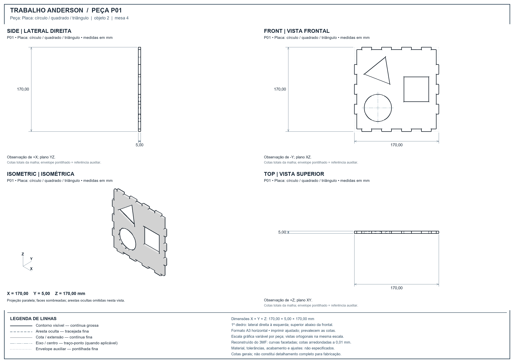
Faculdade de Tecnologia de Itapetininga - Professor Antonio Belizandro Barbosa Rezende
14 peças · 56 vistas · medidas em milímetros · fonte: trabalho anderson finalizado.3mf
Abra cada prancha para ver as quatro vistas. PNG: imagem; SVG: desenho vetorial; DXF: linhas e textos editáveis em CAD.
As escalas do projeto foram aplicadas. A rotação de impressão foi removida para orientar as peças. FRONT mostra o perfil principal; Y corresponde à profundidade. Cada peça e placa tem sua própria prancha, identificada pelo nome e número.
Contínua grossa: contorno visível. Tracejada fina: aresta oculta. Contínua fina: cotas e extensões. Pontilhada: envelope auxiliar de cotagem. Traço-ponto: eixos/centros, somente quando identificados; não confundir com pontilhada.
As cotas indicam as dimensões totais da malha, arredondadas a 0,01 mm. A precisão exibida não constitui tolerância de fabricação. O 3MF não contém desenhos paramétricos nem especificações de tolerância, material ou acabamento. Os desenhos não incluem cotagem completa de cada recorte/raio e não devem ser usados como detalhamento final de fabricação.
Referência geral para convenções de linhas: ISO 128-2:2022. Não se declara certificação ou conformidade integral.
Capa e equipe · Tabela de medidas em imagem · Tabela de recortes (CSV) · Tabela de medidas (CSV) · Catálogo visual
| Peça / objeto | Nome da peça | X × Y × Z (mm) | Mesa |
|---|---|---|---|
| P01 / 2 | Placa: círculo / quadrado / triângulo | 170,00 × 5,00 × 170,00 | 4 |
| P02 / 4 | Estrela | 70,08 × 50,00 × 79,15 | 2 |
| P03 / 6 | Trevo | 58,06 × 50,00 × 58,06 | 2 |
| P04 / 8 | Placa: estrela / coração | 170,00 × 5,01 × 170,00 | 3 |
| P05 / 10 | Hexágono | 56,46 × 50,00 × 56,46 | 2 |
| P06 / 12 | Placa: hexágono / trevo | 170,00 × 5,01 × 170,00 | 5 |
| P07 / 14 | Coração | 58,78 × 50,00 × 58,78 | 2 |
| P08 / 16 | Quadrado com cantos arredondados | 48,50 × 50,00 × 48,50 | 2 |
| P09 / 18 | Círculo | 51,98 × 50,00 × 52,00 | 2 |
| P10 / 20 | Pentágono | 49,03 × 50,00 × 46,83 | 2 |
| P11 / 22 | Losango | 66,38 × 50,00 × 45,57 | 2 |
| P12 / 24 | Triângulo achatado | 73,28 × 50,00 × 38,81 | 2 |
| P13 / 26 | Triângulo | 44,01 × 50,00 × 46,35 | 2 |
| P14 / 28 | Placa: losango / pentágono / triângulo | 170,00 × 5,01 × 170,00 | 1 |
Placa: círculo / quadrado / triângulo

Estrela
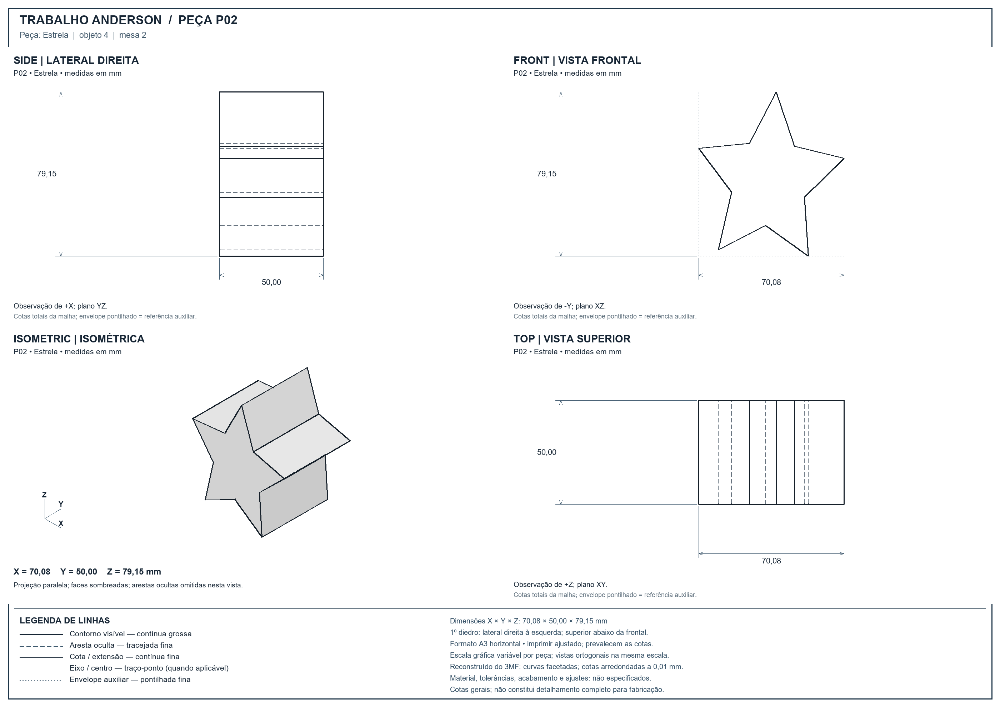
Trevo
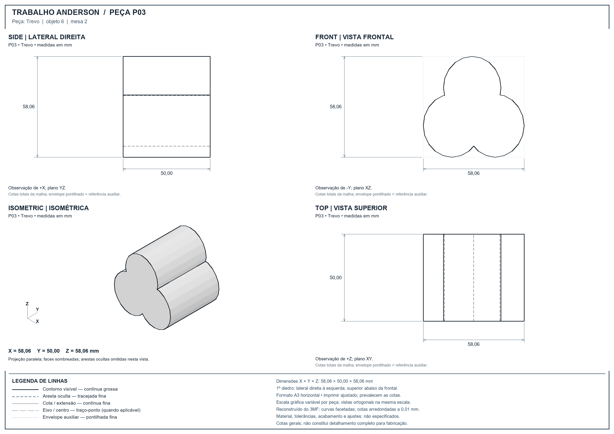
Placa: estrela / coração
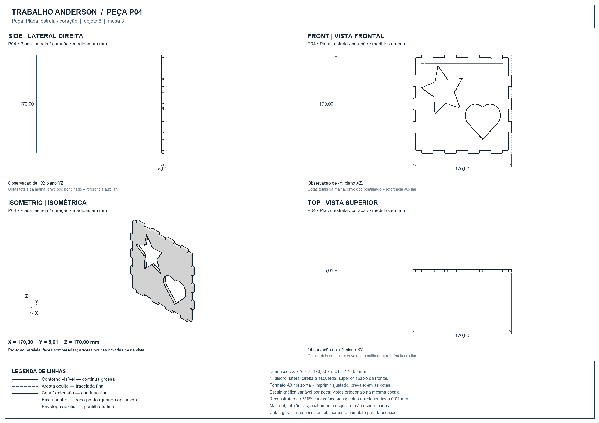
Hexágono
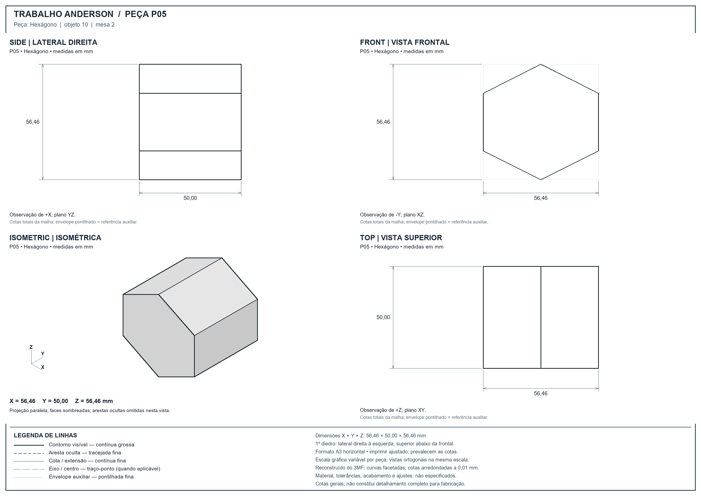
Placa: hexágono / trevo
Coração
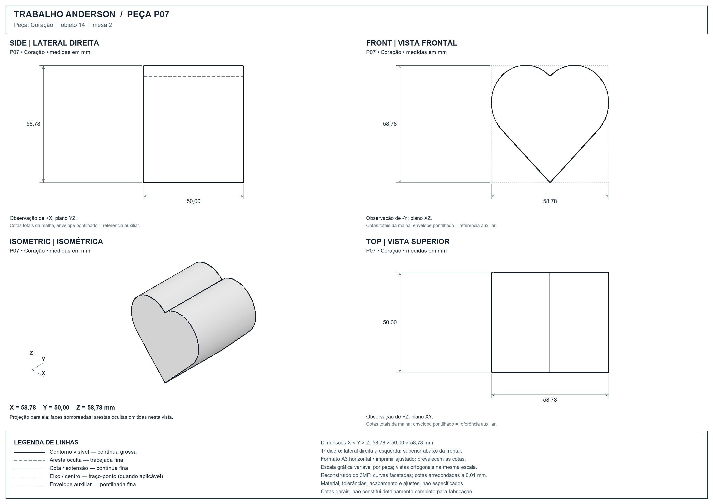
Quadrado com cantos arredondados
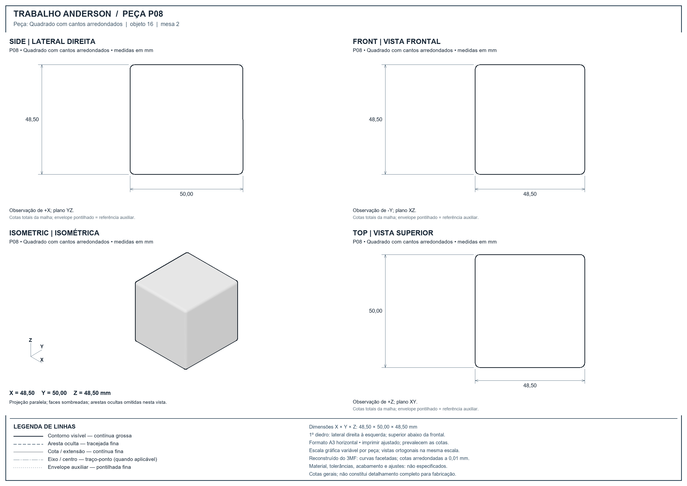
Círculo
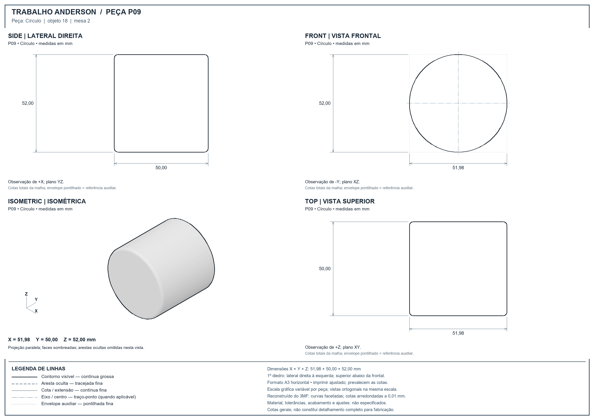
Pentágono
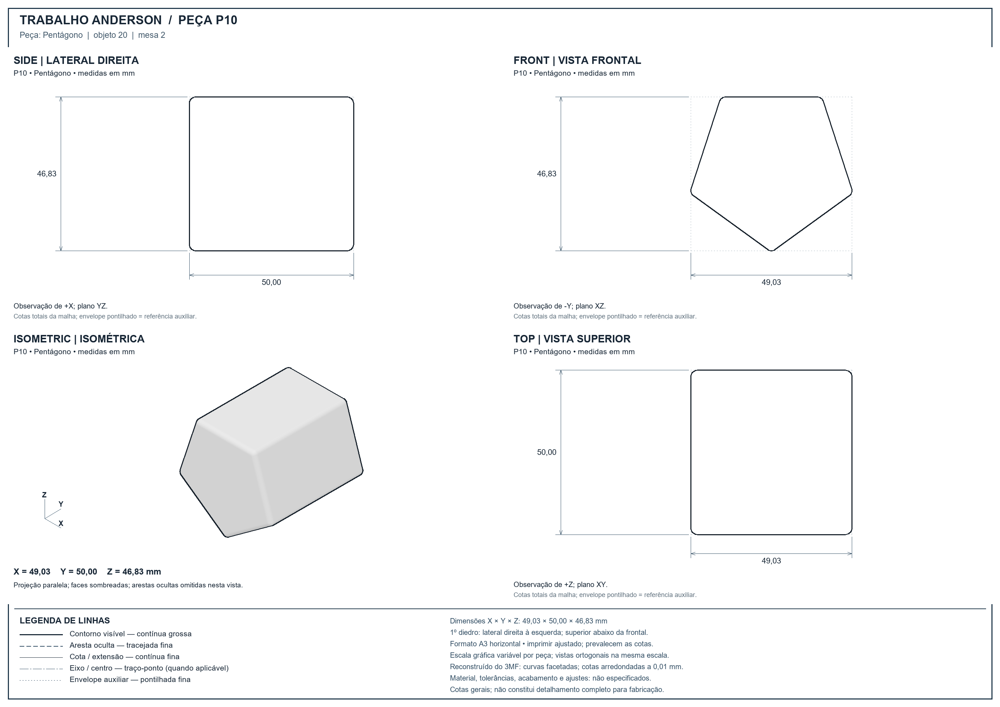
Losango
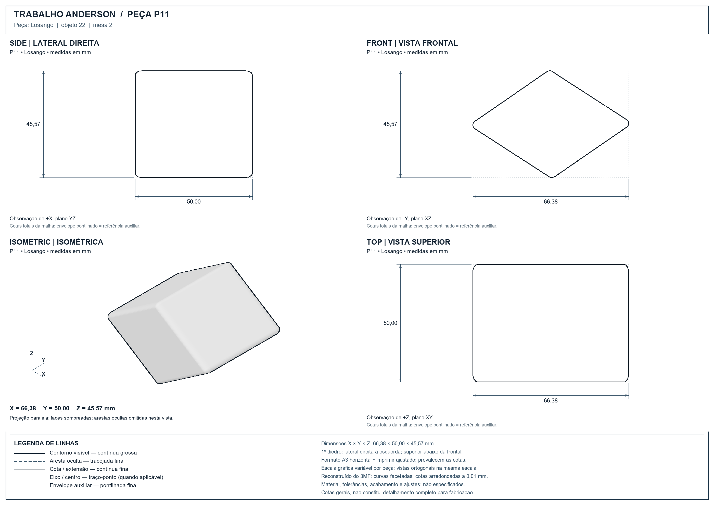
Triângulo achatado
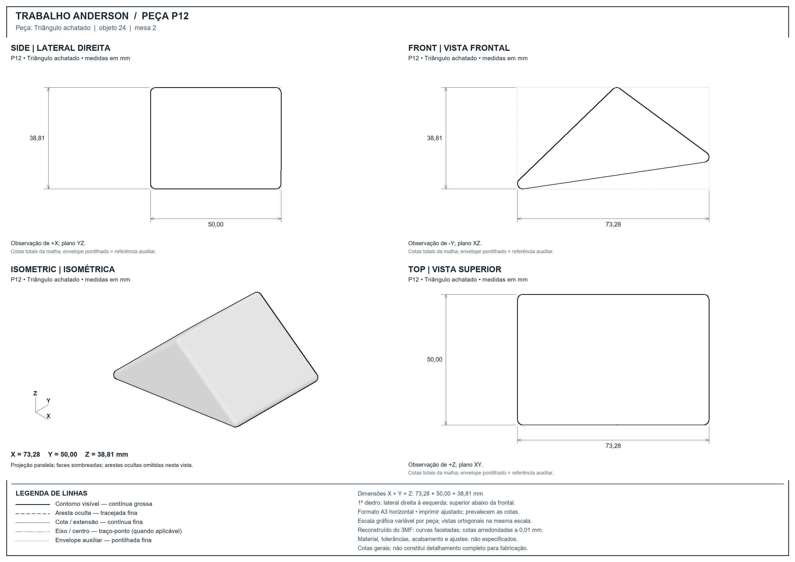
Triângulo
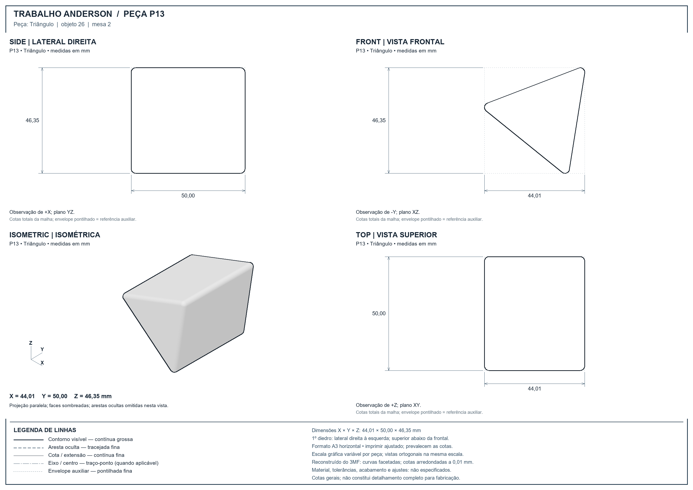
Placa: losango / pentágono / triângulo
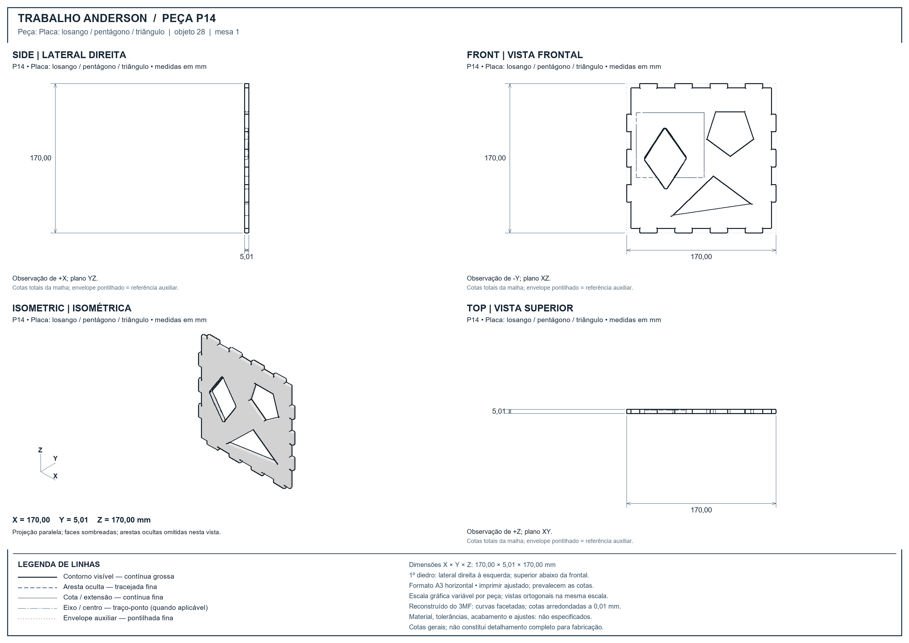